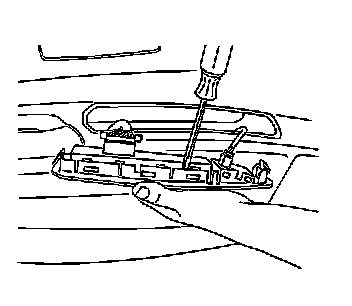

Power Mirror Switch: Service and Repair
Power Mirror Switch Replacement
Removal Procedure

1. Insert a flat bladed tool under the front edge of the front door switch.
2. Push the tool firmly towards the switch to disengage the retainer.
3. Lift up on the rear of the switch plate to remove it from the door trim panel.
4. Disconnect electrical connectors.

5. Remove the appropriate switch from the bezel by disengaging the side snap walls with a small flat bladed tool.
Installation Procedure

1. Snap the switch into the bezel.
2. Connect the electrical connectors.
3. Install the switch into the door trim panel.
4. Engage the rear of the switch to the door panel.

5. Press down on the switch plate evenly to engage the retainer.